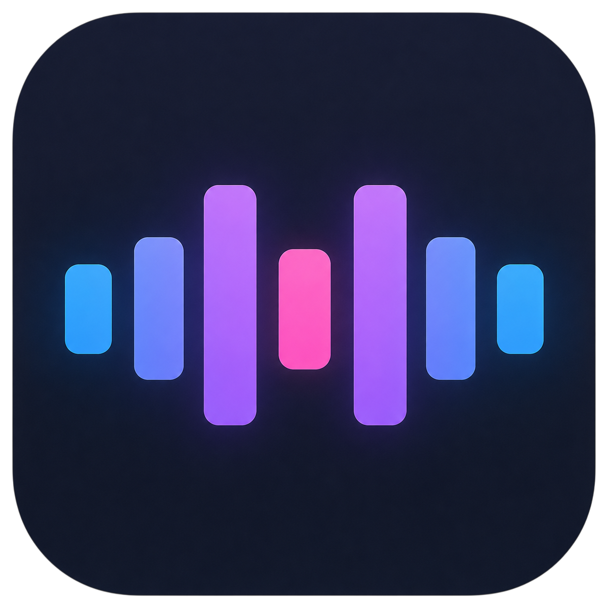
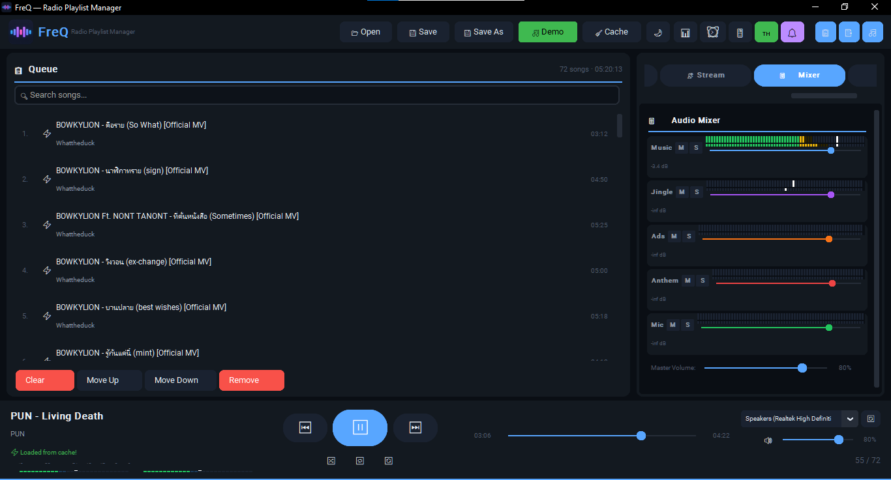

Shape the mix
Balance music, jingles, ads, anthem and mic channels with mute, solo, gain and responsive meters.

FreQRADIO PLAYLIST MANAGERFreQ turns your music library into a living radio station. Build queues, schedule jingles, record mic segments, and stream to your audience from one calm, focused workspace.

FreQ keeps the technical work close at hand, so you can focus on what listeners actually hear.
Balance music, jingles, ads, anthem and mic channels with mute, solo, gain and responsive meters.
Import local tracks or YouTube playlists, reorder everything, save it as a .freq show file and keep the flow moving.
Automate jingles, commercial breaks and the national anthem while keeping playback ready to resume.
Record timed microphone segments and place them directly into your broadcast queue.
Send audio to Icecast, Shoutcast or WebRTC with metadata updates for the current song.
Background downloads, cached audio and native audio processing keep the studio feeling quick.
A practical workflow for solo broadcasters, community stations and anyone building a show from a desk.
“A focused radio desk for people who care about the next song.”
FreQ · Radio Playlist ManagerDownload FreQ, explore the source, and start building a better broadcast workflow.
Get FreQ Today